VBA Quick Guide
VBA stands for Visual Basic for Applications an event driven programming language from Microsoft that is now predominantly used with Microsoft office applications such as MS-Excel, MS-Word and MS-Access.
It helps techies to build customized applications and solutions to enhance the capabilities of those applications. The advantage of this facility is that we NEED NOT have visual basic installed on our PC but installing office will implicitly help us to achieve the purpose.
We can use VBA in all office versions right from MS-Office 97 to MS-Office 2013 and also with any of the latest versions available. Among VBA, Excel VBA is the most popular one and the reason for using VBA is that we can build very powerful tools in MS Excel using linear programming.
Application of VBA
You might wonder why we need to use VBA in excel as MS-Excel itself provides loads on inbuilt functions. MS-Excel provides only basic inbuilt functions which maynot be sufficient to perform complex calculations. Under those circumstances VBA becomes the most obvious solution.
One of the best examples is it is very hard to calculate monthly repayment for a loan using Excel's built-in formulas but it is easy to program a VBA for such calculation.
Accessing VBA Editor
In Excel window, press "ALT+F11". VBA window opens as shown below.
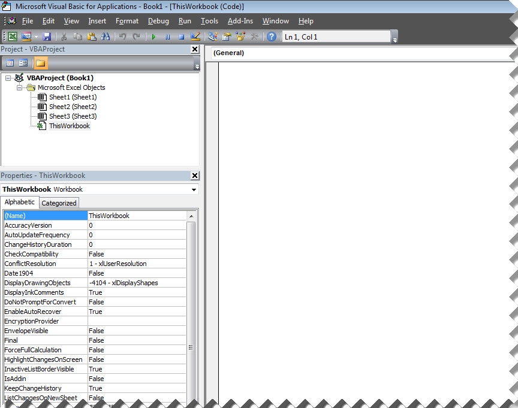Excel VBA Macros
In this chapter let us understand how to write a simple macro. Let us take it step by step.
Step 1. First let us enable 'Developer' menu in Excel 20XX. To do the same, click on File >> Options.
Step 2. Click Customize Ribbon Tab and check 'Developer' and click 'OK'.
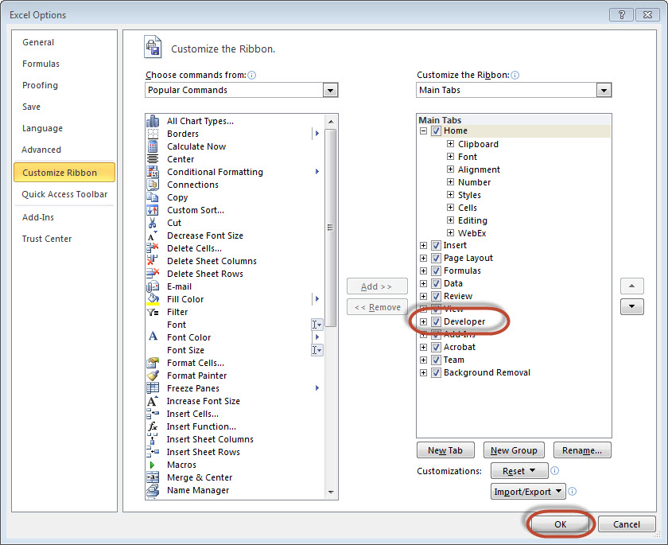Step 3. The 'Developer' ribbon appears in menu bar.
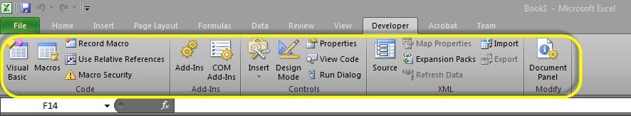Step 4. click 'Visual Basic' Button to open VBA Editor.
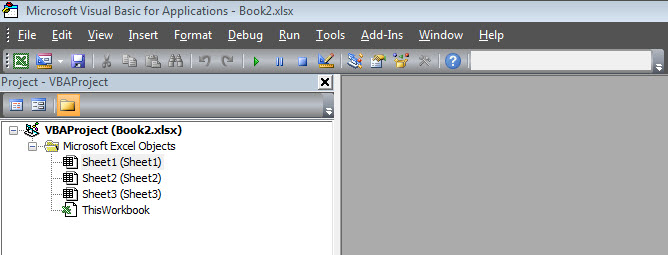Step 5. Now Let us start scripting by adding a button. Click 'Insert' >> Select 'button'.
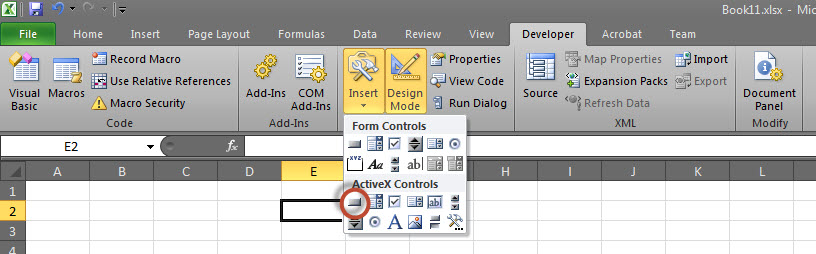Step 6. Perform a Right Click and choose 'properties'.
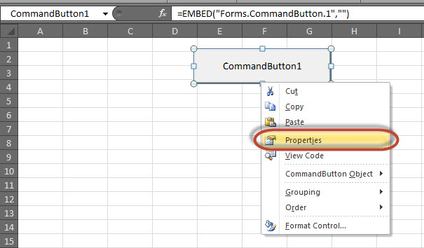Step 7. Edit the name and Caption as shown below.

Step 8. Now Double click the button, the sub procedure outline would be displayed as shown below.
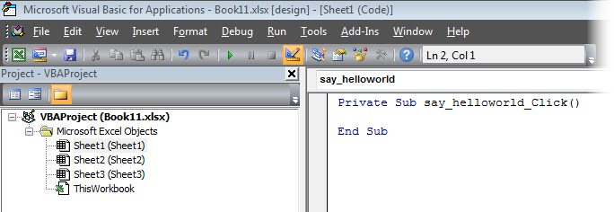Step 9. Let us start coding by simply adding a message.
Private Sub say_helloworld_Click()
MsgBox "Hi"
End Sub
Step 10. Now you can click the button to execute the sub-procedure. The Output of the sub-procedure is shown below. We will demostrate further chapters using a simple button as explained from step#1 to 10. Hence It is important to understand this chapter thoroughly.

Excel VBA Terminologies
In this chapter let us understand commonly used excel VBA terminologies. These terminologies will be used in further modules hence understanding each one of these is a key.
Modules
1. Modules is the area where code is written. This is a new Workbook hence there aren't any Modules.
2. To insert a Module navigate to Insert >> Module. Once a module is inserted 'module1' is created. Within the modules, we can write VBA code and the code is written within a Procedure. A Procedure/Sub Procedure is a series of VBA statements instructing what to do.
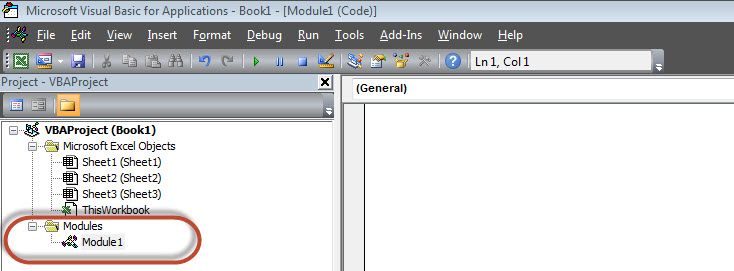Procedure
Procedures are group of statements that are executed as a whole which instructs Excel how to perform a specific task. The task performed can be very simple or very complicated and it is a good practice to break down complicated procedures into smaller ones.
The two main types of Procedures are Sub and Function.
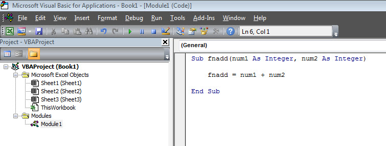Function
A function is a group of reusable code which can be called anywhere in your program. This eliminates the need of writing same code over and over again. This will enable programmers to divide a big program into a number of small and manageable functions.
Apart from inbuilt Functions, VBA allows us to write user-defined functions as well and statements are written between Function and End Function
Sub Procedures
Sub Procedures work similar to functions while Sub procedures DONOT Return a value while functions may or may not return a value. Sub procedures Can be called without call keyword. Sub procedures are always enclosed within Sub and End Sub statements.
Comments in VBA
Comments are used to document the program logic and the user information with which other programmers can seamlessly work on the same code in future.
It can include information such as developed by, modified by and it can also include incorporated logic. Comments are ignored by the interpreter while execution.
Comments in VBA are denoted by two methods.
1. Any statement that starts with a Single Quote (‘) is treated as comment. Following is the example:
' This Script is invoked after successful login ' Written by : TutorialsPoint ' Return Value : True / False
2. Any statement that starts with the keyword "REM". Following is the example:
REM This Script is written to Validate the Entered Input REM Modified by : Tutorials point/user2
What is a Message Box?
The MsgBox function displays a message box and waits for the user to click a button and then an action is performed based on the button clicked by the user.
Syntax
MsgBox(prompt[,buttons][,title][,helpfile,context])
Parameter Description
Prompt - A Required Parameter. A String that is displayed as a message in the dialog box. The maximum length of prompt is approximately 1024 characters. If the message extends to more than a line, then we can separate the lines using a carriage return character (Chr(13)) or a linefeed character (Chr(10)) between each line.
buttons - An Optional Parameter. A Numeric expression that specifies the type of buttons to display, the icon style to use, the identity of the default button, and the modality of the message box. If left blank, the default value for buttons is 0.
Title - An Optional Parameter. A String expression displayed in the title bar of the dialog box. If the title is left blank, the application name is placed in the title bar.
helpfile - An Optional Parameter. A String expression that identifies the Help file to use to provide context-sensitive help for the dialog box.
context - An Optional Parameter. A Numeric expression that identifies the Help context number assigned by the Help author to the appropriate Help topic. If context is provided, helpfile must also be provided.
The Buttons parameter can take any of the following values:
0 vbOKOnly Displays OK button only.
1 vbOKCancel Displays OK and Cancel buttons.
2 vbAbortRetryIgnore Displays Abort, Retry, and Ignore buttons.
3 vbYesNoCancel Displays Yes, No, and Cancel buttons.
4 vbYesNo Displays Yes and No buttons.
5 vbRetryCancel Displays Retry and Cancel buttons.
16 vbCritical Displays Critical Message icon.
32 vbQuestion Displays Warning Query icon.
48 vbExclamation Displays Warning Message icon.
64 vbInformation Displays Information Message icon.
0 vbDefaultButton1 First button is default.
256 vbDefaultButton2 Second button is default.
512 vbDefaultButton3 Third button is default.
768 vbDefaultButton4 Fourth button is default.
0 vbApplicationModal Application modal. The current application will not work until the user responds to the message box.
4096 vbSystemModal System modal. All applications will not work until the user responds to the message box.
The above values are logically divided into four groups: The first group(0 to 5) indicates the buttons to be displayed in the message box. The second group (16, 32, 48, 64) describes the sytle of the icon to be displayed, the third group (0, 256, 512, 768) indicates which button must be the default, and the fourth group (0, 4096) determines the modality of the message box.
Return Values
The MsgBox function can return one of the following values using which we will be able to identify the button the user has clicked in the message box.
1 - vbOK - OK was clicked
2 - vbCancel - Cancel was clicked
3 - vbAbort - Abort was clicked
4 - vbRetry - Retry was clicked
5 - vbIgnore - Ignore was clicked
6 - vbYes - Yes was clicked
7 - vbNo - No was clicked
Example
Function MessageBox_Demo()
'Message Box with just prompt message
MsgBox("Welcome")
'Message Box with title, yes no and cancel Butttons
a = MsgBox("Do you like blue color?",3,"Choose options")
' Assume that you press No Button
msgbox ("The Value of a is " & a)
End Function
Output
1. The above Function can be executed either by clicking "Run" Button on VBA Window or by calling the function from Excel Worksheet as shown below.

2. A Simple Message box is displayed with a message "Welcome" and an "OK" Button

3. After Clicking OK, yet another dialog box is displayed with a message and "yes, no, and cancel" buttons.

4. After Clicking Cancel button the value of that button(7) is stored as an integer and displayed as a message box to the user as shown below. Using this value we will be able to know which button user has clicked..

What is an Input Box?
The InputBox function helps the user to get the values from the user. After entering the values, if the user clicks the OK button or presses ENTER on the keyboard, the InputBox function will return the text in the text box. If the user clicks on the Cancel button, the function will return an empty string ("").
Syntax
InputBox(prompt[,title][,default][,xpos][,ypos][,helpfile,context])
Parameter Description :
Prompt - A Required Parameter. A String that is displayed as a message in the dialog box. The maximum length of prompt is approximately 1024 characters. If the message extends to more than a line, then we can separate the lines using a carriage return character (Chr(13)) or a linefeed character (Chr(10)) between each line.
Title - An Optional Parameter. A String expression displayed in the title bar of the dialog box. If the title is left blank, the application name is placed in the title bar.
Default - An Optional Parameter. A default text in the text box that the user would like to be displayed.
XPos - An Optional Parameter. The Position of X axis which represents the prompt distance from left side of the screen horizontally. If left blank, the input box is horizontally centered.
YPos - An Optional Parameter. The Position of Y axis which represents the prompt distance from left side of the screen Vertically. If left blank, the input box is Vertically centered.
helpfile - An Optional Parameter. A String expression that identifies the Help file to use to provide context-sensitive Help for the dialog box.
context - An Optional Parameter. A Numeric expression that identifies the Help context number assigned by the Help author to the appropriate Help topic. If context is provided, helpfile must also be provided.
Example
We will calculate the area of a rectangle by getting values from the user at run time with the help of two input boxes (one for length and one for width)
Function findArea()
Dim Length As Double
Dim Width As Double
Length = InputBox("Enter Length ", "Enter a Number")
Width = InputBox("Enter Width", "Enter a Number")
findArea = Length * Width
End Function
Output
1. To Execute the same, we will need to call using the function name and press Enter as shown below.
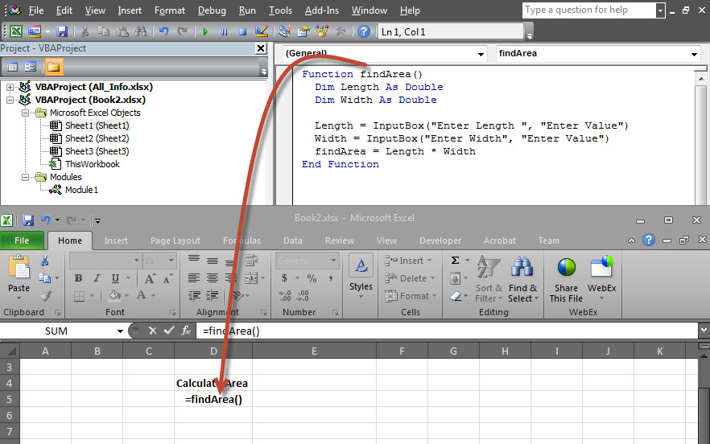2. Upon Execution, The First Input box(Length) is displayed and user has to enter a value into the input box.
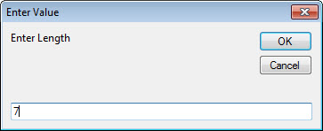3. After entering the first value, the second input box(width) is displayed to the user.
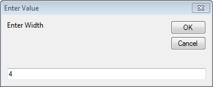4. Upon entering the second number and clicking OK button, the area is displayed to the user as shown below.
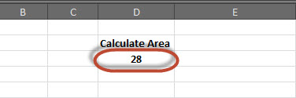Variable is a named memory location used to hold a value that can be changed during the script execution. Below are the basic rules for naming a variable. Listed below are the rules for naming a variable.
You must use a letter as the first character.
You can't use a space, period (.), exclamation mark (!), or the characters @, &, $, # in the name.
Name can't exceed 255 characters in length.
Cannot use Visual Basic reserved keywords as variable name.
Syntax
In VBA, we need to declare the variables before using them.
Dim <<variable_name>> As <<variable_type>>
Data Types
There are many VBA data types, which can be grossly divided into two main categories namely numeric and non-numeric data types.
Numeric Data-Types
Below table displays the numeric data types and allowed range of values.
| Type | Range of Values |
|---|---|
| Byte | 0 to 255 |
| Integer | -32,768 to 32,767 |
| Long | -2,147,483,648 to 2,147,483,648 |
| Single | -3.402823E+38 to -1.401298E-45 for negative values 1.401298E-45 to 3.402823E+38 for positive values. |
| Double | -1.79769313486232e+308 to -4.94065645841247E-324 for negative values 4.94065645841247E-324 to 1.79769313486232e+308 for positive values. |
| Currency | -922,337,203,685,477.5808 to 922,337,203,685,477.5807 |
| Decimal | +/- 79,228,162,514,264,337,593,543,950,335 if no decimal is use +/- 7.9228162514264337593543950335 (28 decimal places). |
Non-Numeric Data Types
Below table displays the Non-numeric data types and allowed range of values.
| Type | Range of Values |
|---|---|
| String(fixed length) | 1 to 65,400 characters |
| String(variable length) | 0 to 2 billion characters |
| Date | January 1, 100 to December 31, 9999 |
| Boolean | True or False |
| Object | Any embedded object |
| Variant(numeric) | Any value as large as Double |
| Variant(text) | Same as variable-length string |
Example
Let us create a button and name it as 'Variables_demo' to demostrate the use of variables.
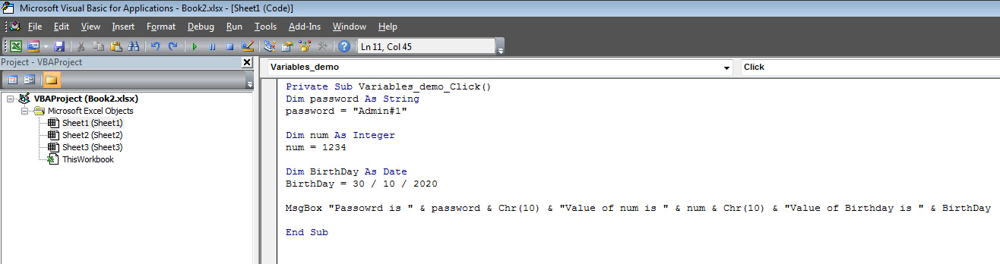Private Sub Variables_demo_Click() Dim password As String password = "Admin#1" Dim num As Integer num = 1234 Dim BirthDay As Date BirthDay = 30 / 10 / 2020 MsgBox "Passowrd is " & password & Chr(10) & "Value of num is " & num & Chr(10) & "Value of Birthday is " & BirthDay End Sub
Output
Upon Executing the script, the output will be as shown below.
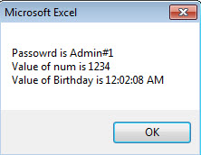Constant is a named memory location used to hold a value that CANNOT be changed during the script execution. If a user tries to change a Constant Value, the Script execution ends up with an error. Constants are declared the same way the variables are declared.
Below are the rules for naming a constant.
You must use a letter as the first character.
You can't use a space, period (.), exclamation mark (!), or the characters @, &, $, # in the name.
Name can't exceed 255 characters in length.
Cannot use Visual Basic reserved keywords as variable name.
Syntax
In VBA, we need to assign a value to the declared Constants. Error would be thrown if we try to change the value of the constant.
Const <<constant_name>> As <<constant_type>> = <<constant_value>>
Example
We will create a button "Constant_demo" to demonstrate how to work with constants.
Private Sub Constant_demo_Click() Const MyInteger As Integer = 42 Const myDate As Date = #2/2/2020# Const myDay As String = "Sunday" MsgBox "Integer is " & MyInteger & Chr(10) & "myDate is " & myDate & Chr(10) & "myDay is " & myDay End Sub
Output
Upon executing the script, the output will be displayed as shown below.
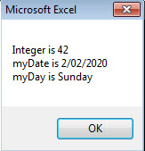What is an operator?
Simple answer can be given using expression 4 + 5 is equal to 9. Here, 4 and 5 are called operands and + is called operator. VBA supports following types of operators:
Arithmetic Operators
Comparison Operators
Logical (or Relational) Operators
Concatenation Operators
The Arithmatic Operators
There are following arithmatic operators supported by VBA:
Assume variable A holds 5 and variable B holds 10, then:
| Operator | Description | Example |
|---|---|---|
| + | Adds two operands | A + B will give 15 |
| - | Subtracts second operand from the first | A - B will give -5 |
| * | Multiply both operands | A * B will give 50 |
| / | Divide numerator by denumerator | B / A will give 2 |
| % | Modulus Operator and remainder of after an integer division | B MOD A will give 0 |
| ^ | Exponentiation Operator | B ^ A will give 100000 |
The Comparison Operators
There are following comparison operators supported by VBA:
Assume variable A holds 10 and variable B holds 20, then:
| Operator | Description | Example |
|---|---|---|
| == | Checks if the value of two operands are equal or not, if yes then condition becomes true. | (A == B) is False. |
| <> | Checks if the value of two operands are equal or not, if values are not equal then condition becomes true. | (A <> B) is True. |
| > | Checks if the value of left operand is greater than the value of right operand, if yes then condition becomes true. | (A > B) is False. |
| < | Checks if the value of left operand is less than the value of right operand, if yes then condition becomes true. | (A < B) is True. |
| >= | Checks if the value of left operand is greater than or equal to the value of right operand, if yes then condition becomes true. | (A >= B) is False. |
| <= | Checks if the value of left operand is less than or equal to the value of right operand, if yes then condition becomes true. | (A <= B) is True. |
The Logical Operators:
There are following logical operators supported by VBA:
Assume variable A holds 10 and variable B holds 0, then:
| Operator | Description | Example |
|---|---|---|
| AND | Called Logical AND operator. If both the conditions are True then Expression becomes true. | a<>0 AND b<>0 is False. |
| OR | Called Logical OR Operator. If any of the two conditions are True then condition becomes true. | a<>0 OR b<>0 is true. |
| NOT | Called Logical NOT Operator. Use to reverses the logical state of its operand. If a condition is true then Logical NOT operator will make false. | NOT(a<>0 OR b<>0) is false. |
| XOR | Called Logical Exclusion. It is the combination of NOT and OR Operator. If one, and only one, of the expressions evaluates to True, result is True. | (a<>0 XOR b<>0) is false. |
The Concatenation Operators
There are following Concatenation operators supported by VBA:
Assume variable A holds 5 and variable B holds 10 then:
| Operator | Description | Example |
|---|---|---|
| + | Adds two Values as Variable Values are Numeric | A + B will give 15 |
| & | Concatenates two Values | A & B will give 510 |
Assume variable A="Microsoft" and variable B="VBScript", then:
| Operator | Description | Example |
|---|---|---|
| + | Concatenates two Values | A + B will give MicrosoftVBScript |
| & | Concatenates two Values | A & B will give MicrosoftVBScript |
Note : Concatenation Operators can be used for both numbers and strings. The Output depends on the context if the variables hold numeric value or String Value.
Decision making allows programmers to control the execution flow of a script or one of its sections. The execution is governed by one or more conditional statements.
Following is the general form of a typical decision making structure found in most of the programming languages:

VBA provides following types of decision making statements. Click the following links to check their details.
| Statement | Description |
|---|---|
| if statement | An if statement consists of a boolean expression followed by one or more statements. |
| if..else statement | An if else statement consists of a boolean expression followed by one or more statements. If the condition is True, the statements under If statements are executed. If the condition is false, Else part of the script is Executed |
| if...elseif..else statement | An if statement followed by one or more ElseIf Statements, that consists of boolean expressions and then followed by an optional else statement, which executes when all the condition becomes false. |
| nested if statements | An if or elseif statement inside another if or elseif statement(s). |
| switch statement | A switch statement allows a variable to be tested for equality against a list of values. |
There may be a situation when you need to execute a block of code several number of times. In general, statements are executed sequentially: The first statement in a function is executed first, followed by the second, and so on.
Programming languages provide various control structures that allow for more complicated execution paths.
A loop statement allows us to execute a statement or group of statements multiple times and following is the general from of a loop statement in VBA.

VBA provides the following types of loops to handle looping requirements. Click the following links to check their detail.
| Loop Type | Description |
|---|---|
| for loop | Executes a sequence of statements multiple times and abbreviates the code that manages the loop variable. |
| for ..each loop | This is executed if there is at least one element in group and reiterated for each element in a group. |
| while..wend loop | This tests the condition before executing the loop body. |
| do..while loops | The do..While statements will be executed as long as condition is True.(i.e.,) The Loop should be repeated till the condition is False. |
| do..until loops | The do..Until statements will be executed as long as condition is False.(i.e.,) The Loop should be repeated till the condition is True. |
Loop Control Statements:
Loop control statements change execution from its normal sequence. When execution leaves a scope, all the remaining statements in the loop are NOT executed.
VBA supports the following control statements. Click the following links to check their detail.
| Control Statement | Description |
|---|---|
| Exit For statement | Terminates the For loop statement and transfers execution to the statement immediately following the loop |
| Exit Do statement | Terminates the Do While statement and transfers execution to the statement immediately following the loop |
Strings are a sequence of characters, which can consist of alphabets or numbers or special characters or all of them. A variable is said to be a string if it is enclosed within double quotes " ".
Syntax :
variablename = "string"
Examples :
str1 = "string" ' Only Alphabets str2 = "132.45" ' Only Numbers str3 = "!@#$;*" ' Only Special Characters Str4 = "Asc23@#" ' Has all the above
String Functions :
There are predefined VBA String functions, which help the developers to work with the strings very effectively. Below are String methods that are supported in VBA. Please click on each one of the methods to know in detail.
| Function Name | Description |
|---|---|
| InStr | Returns the first occurence of the specified substring. Search happens from left to right. |
| InstrRev | Returns the first occurence of the specified substring. Search happens from Right to Left. |
| Lcase | Returns the lower case of the specified string. |
| Ucase | Returns the Upper case of the specified string. |
| Left | Returns a specific number of characters from the left side of the string. |
| Right | Returns a specific number of characters from the Right side of the string. |
| Mid | Returns a specific number of characters from a string based on the specified parameters. |
| Ltrim | Returns a string after removing the spaces on the left side of the specified string. |
| Rtrim | Returns a string after removing the spaces on the right side of the specified string. |
| Trim | Returns a string value after removing both leading and trailing blank spaces. |
| Len | Returns the lenght of the given string. |
| Replace | Returns a string after replacing a string with another string. |
| Space | Fills a string with the specified number of spaces. |
| StrComp | Returns an integer value after comparing the two specified strings. |
| String | Returns a String with a specified character the specified number of times. |
| StrReverse | Returns a String after reversing the sequece of the characters of the given string. |
VBScript Date and Time Functions help the developers to convert date and time from one format to another or to express the date or time value in the format that suits a specific condition.
Date Functions
| Function | Description |
|---|---|
| Date | A Function, which returns the current system date |
| CDate | A Function, which converts a given input to Date |
| DateAdd | A Function, which returns a date to which a specified time interval has been added |
| DateDiff | A Function, which returns the difference between two time period |
| DatePart | A Function, which returns a specified part of the given input date value |
| DateSerial | A Function, which returns a valid date for the given year,month and date |
| FormatDateTime | A Function, which formats the date based on the supplied parameters |
| IsDate | A Function, which returns a Boolean Value whether or not the supplied parameter is a date |
| Day | A Function, which returns an integer between 1 and 31 that represents the day of the specified Date |
| Month | A Function, which returns an integer between 1 and 12 that represents the month of the specified Date |
| Year | A Function, which returns an integer that represents the year of the specified Date |
| MonthName | A Function, which returns Name of the particular month for the specifed date |
| WeekDay | A Function, which returns an integer(1 to 7) that represents the day of the week for the specified day. |
| WeekDayName | A Function, which returns the weekday name for the specified day. |
Time Functions
| Function | Description |
|---|---|
| Now | A Function, which returns the current system date and Time |
| Hour | A Function, which returns and integer between 0 and 23 that represents the Hour part of the the given time |
| Minute | A Function, which returns and integer between 0 and 59 that represents the Minutes part of the the given time |
| Second | A Function, which returns and integer between 0 and 59 that represents the Seconds part of the the given time |
| Time | A Function, which returns the current system time |
| Timer | A Function, which returns the number of seconds and milliseconds since 12:00 AM |
| TimeSerial | A Function, which returns the time for the specific input of hour,minute and second |
| TimeValue | A Function, which converts the input string to a time format |
What is an Array?
We know very well that a variable is a container to store a value. Sometimes, developers are in a position to hold more than one value in a single variable at a time. When a series of values are stored in a single variable, then it is known as array variable.
Array Declaration
Arrays are declared the same way a variable has been declared except that the declaration of an array variable uses paranthesis. In the below example, the size of the array is mentioned in the brackets.
'Method 1 : Using Dim
Dim arr1() 'Without Size
'Method 2 : Mentioning the Size
Dim arr2(5) 'Declared with size of 5
'Method 3 : using 'Array' Parameter
Dim arr3
arr3 = Array("apple","Orange","Grapes")
Although, the Array size is indicated as 5, it can hold 6 values as array index starts from ZERO.
Array Index Cannot be Negative.
VBScript Arrays can store any type of variable in an array. Hence, an array can store an integer, string or characters in a single array variable.
Assigning Values to an Array
The values are assigned to the array by specifying array index value against each one of the values to be assigned. It can be a string.
Example :
Add a button and add the below function
Private Sub Constant_demo_Click()
Dim arr(5)
arr(0) = "1" 'Number as String
arr(1) = "VBScript" 'String
arr(2) = 100 'Number
arr(3) = 2.45 'Decimal Number
arr(4) = #10/07/2013# 'Date
arr(5) = #12.45 PM# 'Time
msgbox("Value stored in Array index 0 : " & arr(0))
msgbox("Value stored in Array index 1 : " & arr(1))
msgbox("Value stored in Array index 2 : " & arr(2))
msgbox("Value stored in Array index 3 : " & arr(3))
msgbox("Value stored in Array index 4 : " & arr(4))
msgbox("Value stored in Array index 5 : " & arr(5))
End Sub
When you execute the function the output is shown below:
Value stored in Array index 0 : 1 Value stored in Array index 1 : VBScript Value stored in Array index 2 : 100 Value stored in Array index 3 : 2.45 Value stored in Array index 4 : 7/10/2013 Value stored in Array index 5 : 12:45:00 PM
Multi Dimension Arrays
Arrays are not just limited to single dimenstion and can have a maxinum of 60 dimensions. Two-dimension arrays are the most commonly used ones.
Example :
In the below example, a multi-dimension array is declared with 3 rows and 4 columns.
Private Sub Constant_demo_Click()
Dim arr(2,3) as Variant ' Which has 3 rows and 4 columns
arr(0,0) = "Apple"
arr(0,1) = "Orange"
arr(0,2) = "Grapes"
arr(0,3) = "pineapple"
arr(1,0) = "cucumber"
arr(1,1) = "beans"
arr(1,2) = "carrot"
arr(1,3) = "tomato"
arr(2,0) = "potato"
arr(2,1) = "sandwitch"
arr(2,2) = "coffee"
arr(2,3) = "nuts"
msgbox("Value in Array index 0,1 : " & arr(0,1))
msgbox("Value in Array index 2,2 : " & arr(2,2))
End Sub
When you execute the function the output is shown below:
Value stored in Array index : 0 , 1 : Orange Value stored in Array index : 2 , 2 : coffee
Redim Statement
ReDim Statement is used to Declare dynamic-array variables and allocate or reallocate storage space.
ReDim [Preserve] varname(subscripts) [, varname(subscripts)]
Preserve - An Optional parameter used to preserve the data in an existing array when you change the size of the last dimension.
varname - A Required parameter, which denotes Name of the variable, which should follow the standard variable naming conventions.
subscripts - A Required parameter, which indicates the size of the array.
Example
In the below example, an array has been redefined and then preserved the values when the existing size of the array is changed.
Note : Upon resizing an array smaller than it was originally, the data in the eliminated elements will be lost.
Private Sub Constant_demo_Click()
Dim a() as variant
i=0
redim a(5)
a(0)="XYZ"
a(1)=41.25
a(2)=22
REDIM PRESERVE a(7)
For i=3 to 7
a(i)= i
Next
'to Fetch the output
For i=0 to ubound(a)
Msgbox a(i)
Next
End Sub
When you execute the function the output is shown below:
XYZ 41.25 22 3 4 5 6 7
Array Methods :
There are various inbuilt functions within VBScript which help the developers to handle arrays effectively. All the methods that are used in conjuction with arrays are listed below. Please click on the method name to know in detail.
| Function | Description |
|---|---|
| LBound | A Function, which returns an integer that corresponds to the smallest subscript of the given arrays. |
| UBound | A Function, which returns an integer that corresponds to the Largest subscript of the given arrays. |
| Split | A Function, which returns an array that contains a specified number of values. Splitted based on a Delimiter. |
| Join | A Function, which returns a String that contains a specified number of substrings in an array. This is an exact opposite function of Split Method. |
| Filter | A Function, which returns a zero based array that contains a subset of a string array based on a specific filter criteria. |
| IsArray | A Function, which returns a boolean value that indicates whether or not the input variable is an array. |
| Erase | A Function, which recovers the allocated memory for the array variables. |
What is a Function?
A function is a group of reusable code which can be called anywhere in your program. This eliminates the need of writing same code over and over again. This will enable programmers to divide a big program into a number of small and manageable functions.
Apart from inbuilt Functions, VBA allows us to write user-defined functions as well. This section will explain you how to write your own functions in VBA.
Function Definition
A VBA function can have an optional return statement. This is required if you want to return a value from a function.
For example, you can pass two numbers in a function and then you can expect from the function to return their multiplication in your calling program.
NOTE : A function can return multiple values separated by comma as an array assigned to the function name itself.
Before we use a function, we need to define that particular function. The most common way to define a function in VBA is by using the Function keyword, followed by a unique function name and it may or may not carry a list of parameters and a statement with a End Function keyword, which indicates the end of the function. The basic syntax is shown below:
Syntax
Add a button and add the below function
Function Functionname(parameter-list) statement 1 statement 2 statement 3 ....... statement n End Function
Example
Add the below function which returns the area. Note that a value/values can be returned with the function name itself.
Function findArea(Length As Double, Optional Width As Variant)
If IsMissing(Width) Then
findArea = Length * Length
Else
findArea = Length * Width
End If
End Function
Calling a Function
To invoke a function, call the function using function name as shown below:
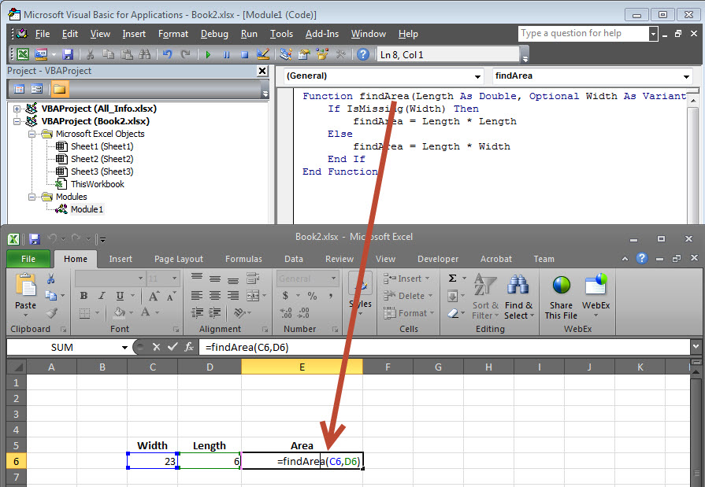The Output of the area would be displayed to the user.
Sub Procedures
Sub Procedures are similar to functions but there are few differences.
Sub procedures DONOT Return a value while functions may or may not return a value.
Sub procedures Can be called without call keyword.
Sub procedures are always enclosed within Sub and End Sub statements.
Example :
Sub Area(x As Double, y As Double) MsgBox x * y End Sub
Calling Procedures :
To invoke a Procedure somewhere in the script, you can make a call from a function. We will not be able to use the same way as that of a function as sub-procedure WILL NOT return a value.
Function findArea(Length As Double, Width As Variant)
area Length, Width ' To Calculate Area 'area' sub proc is called
End Function
1. Now we will be able to call the function only but not the sub procedure as shown below.
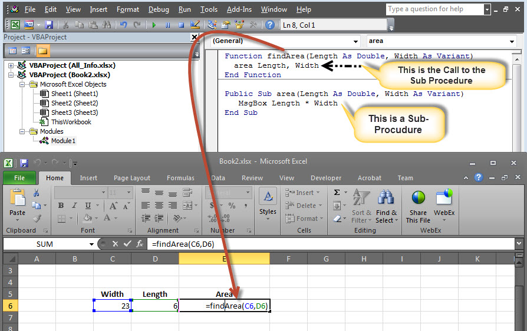2. The Area is calculated and shown only in Message box.
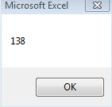3. The result cell displays ZERO as the area value is NOT returned from the function. In short, you cannot make a direct call to a subprocedure from the excel worksheet.
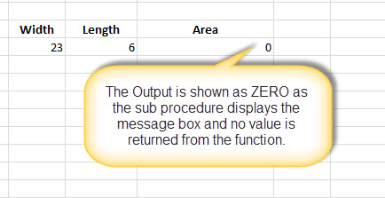VBA Events
VBA, an event driven programming can be triggered when you change a cell or range of cells value manually. Change Event may make things easier, but you can very quickly end up a page full of formatting. There are two kinds of events.
Worksheet Events
Workbook Events
WorkSheet Events
Worksheet Events are triggered when there is a change in the worksheet. It is created by performing right-click on the sheettab and choosing 'view code', and then pasting the code.
User can select each one of those worksheets and choose "WorkSheet" from the drop down to get the list of all supported Worksheet events.
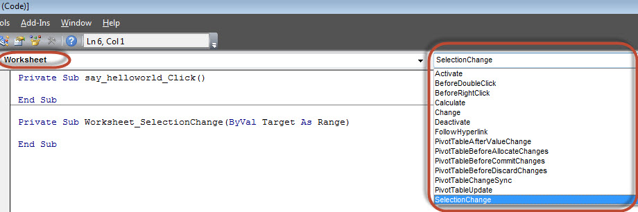Below are the supported worksheet events that can be added by the user.
Private Sub Worksheet_Activate() Private Sub Worksheet_BeforeDoubleClick(ByVal Target As Range, Cancel As Boolean) Private Sub Worksheet_BeforeRightClick(ByVal Target As Range, Cancel As Boolean) Private Sub Worksheet_Calculate() Private Sub Worksheet_Change(ByVal Target As Range) Private Sub Worksheet_Deactivate() Private Sub Worksheet_FollowHyperlink(ByVal Target As Hyperlink) Private Sub Worksheet_SelectionChange(ByVal Target As Range)
Example
Let us say, we just need to display a message before double click.
Private Sub Worksheet_BeforeDoubleClick(ByVal Target As Range, Cancel As Boolean)
MsgBox "Before Double Click"
End Sub
Output
Upon double clicking on any cell, the message box is displayed to the user as shown below.
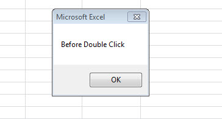Workbook Events
Workbook events are triggered when there is a change to the workbook on the whole. We can add the code for workbook events by selecting the 'ThisWorkbook' and selecting 'workbook' from the dropdown as shown below. Immediately Workbook_open sub procedure is displayed to the user as shown below.
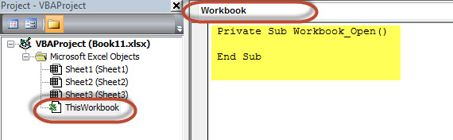Below are the supported WorkBook events that can be added by the user.
Private Sub Workbook_AddinUninstall() Private Sub Workbook_BeforeClose(Cancel As Boolean) Private Sub Workbook_BeforePrint(Cancel As Boolean) Private Sub Workbook_BeforeSave(ByVal SaveAsUI As Boolean, Cancel As Boolean) Private Sub Workbook_Deactivate() Private Sub Workbook_NewSheet(ByVal Sh As Object) Private Sub Workbook_Open() Private Sub Workbook_SheetActivate(ByVal Sh As Object) Private Sub Workbook_SheetBeforeDoubleClick(ByVal Sh As Object, ByVal Target As Range, Cancel As Boolean) Private Sub Workbook_SheetBeforeRightClick(ByVal Sh As Object, ByVal Target As Range, Cancel As Boolean) Private Sub Workbook_SheetCalculate(ByVal Sh As Object) Private Sub Workbook_SheetChange(ByVal Sh As Object, ByVal Target As Range) Private Sub Workbook_SheetDeactivate(ByVal Sh As Object) Private Sub Workbook_SheetFollowHyperlink(ByVal Sh As Object, ByVal Target As Hyperlink) Private Sub Workbook_SheetSelectionChange(ByVal Sh As Object, ByVal Target As Range) Private Sub Workbook_WindowActivate(ByVal Wn As Window) Private Sub Workbook_WindowDeactivate(ByVal Wn As Window) Private Sub Workbook_WindowResize(ByVal Wn As Window)
Example
Let us say, we just need to display a message to the user that a new sheet is created succesfully whenever a new sheet is created.
Private Sub Workbook_NewSheet(ByVal Sh As Object)
MsgBox "New Sheet Created Successfully"
End Sub
Output
Upon creating a new excel sheet a message is displayed to the user as shown below.
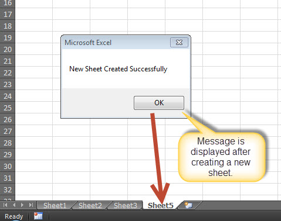There are three types of errors in programming: (a) Syntax Errors and (b) Runtime Errors (c) Logical Errors.
Syntax errors
Syntax errors, also called parsing errors, occur at interpretation time for VBScript. For example, the following line causes a syntax error because it is missing a closing parenthesis:
Function ErrorHanlding_Demo() dim x,y x = "Tutorialspoint" y = Ucase(x End Function
Runtime errors
Runtime errors, also called exceptions, occur during execution, after interpretation.
For example, the following line causes a runtime error because here syntax is correct but at runtime it is trying to call fnmultiply, which is a non-existing function:
Function ErrorHanlding_Demo1()
Dim x,y
x = 10
y = 20
z = fnadd(x,y)
a = fnmultiply(x,y)
End Function
Function fnadd(x,y)
fnadd = x+y
End Function
Logical errors
Logic errors can be the most difficult type of errors to track down. These errors are not the result of a syntax or runtime error. Instead, they occur when you make a mistake in the logic that drives your script and you do not get the result you expected.
You can not catch those errors, because it depends on your business requirement what type of logic you want to put in your program.
For example, dividing a number by zero or a script that is written which enters into infinite loop.
Err Object
Assume if we have a runtime error, then the execution stops by displaying the error message. As a developer, if we want to capture the error, then Error Object is used.
Example
In the below example, Err.Number gives the error number and Err.Description gives error description.
Err.Raise 6 ' Raise an overflow error. MsgBox "Error # " & CStr(Err.Number) & " " & Err.Description Err.Clear ' Clear the error.
Error Handling
VBA Enables an error-handling routine and can also be used to disable an error-handling routine. Without an On Error statement, any run-time error that occurs is fatal: an error message is displayed, and execution stops abruptly.
On Error { GoTo [ line | 0 | -1 ] | Resume Next }
| Keyword | Description |
|---|---|
| GoTo line | Enables the error-handling routine that starts at the line specified in the required line argument. The specified line must be in the same procedure as the On Error statement, or a compile-time error will occur. |
| GoTo 0 | Disables enabled error handler in the current procedure and resets it to Nothing. |
| GoTo -1 | Disables enabled exception in the current procedure and resets it to Nothing. |
| Resume Next | Specifies that when a run-time error occurs, control goes to the statement immediately following the statement where the error occurred, and execution continues from that point |
EXAMPLE
Public Sub OnErrorDemo()
On Error GoTo ErrorHandler ' Enable error-handling routine.
Dim x, y, z As Integer
x = 50
y = 0
z = x / y ' Divide by ZERO Error Raises
ErrorHandler: ' Error-handling routine.
Select Case Err.Number ' Evaluate error number.
Case 10 ' Divide by zero error
MsgBox ("You attempted to divide by zero!")
Case Else
MsgBox "UNKNOWN ERROR - Error# " & Err.Number & " : " & Err.Description
End Select
Resume Next
End Sub
What are Excel Objects
When programming using VBA, there are few important objects that a user would be dealing with.
Application Objects
WorkBook Objects
WorkSheet Objects
Range Objects
Application Objects
The Application object consists of the following
Application-wide settings and options.
Methods that return top-level objects, such as ActiveCell, ActiveSheet, and so on.
Example
'Example 1 :
Set xlapp = CreateObject("Excel.Sheet")
xlapp.Application.Workbooks.Open "C:\test.xls"
'Example 2 :
Application.Windows("test.xls").Activate
'Example 3:
Application.ActiveCell.Font.Bold = True
WorkBook Objects
The Workbook object is a member of the Workbooks collection and contains all the Workbook objects currently open in Microsoft Excel.
Example
'Ex 1 : To close Workbooks
Workbooks.Close
'Ex 2 : To Add an Empty Work Book
Workbooks.Add
'Ex 3: To Open a Workbook
Workbooks.Open FileName:="Test.xls", ReadOnly:=True
'Ex : 4 - To Activate WorkBooks
Workbooks("Test.xls").Worksheets("Sheet1").Activate
Worksheet Objects
The Worksheet object is a member of the Worksheets collection and contains all the Worksheet objects in a workbook.
Example
'Ex 1 : To make it Invisible
Worksheets(1).Visible = False
'Ex 2 : To protect an WorkSheet
Worksheets("Sheet1").Protect password:=strPassword, scenarios:=True
Range Objects
Range Objects Represents a cell, a row, a column, a selection of cells containing one or more continuous blocks of cells.
'Ex 1 : To Put a value in the cell A5
Worksheets("Sheet1").Range("A5").Value = "5235"
'Ex 2 : To put a value in range of Cells
Worksheets("Sheet1").Range("A1:A4").Value = 5
VBA Text Files
We can also read Excel File and write the contents of the cell into a Text File. This way, VBA allows users to work with text files. We can work with test files using two methods
File System Object
using Write Command
Using File System Object(FSO)
As the name suggests, FSO Objects help the developers to work with drives, folders and files. In this section, we will discuss how to use FSO.
| Object Type | Description |
|---|---|
| Drive | Drive is an Object. Contains methods and properties that allow you to gather information about a drive attached to the system |
| Drives | Drives is a Collection. It Provides a list of the drives attached to the system, either physically or logically. |
| File | File is an Object. It Contains methods and properties that allow developers to create, delete or move a file. |
| Files | Files is a Collection. It Provides a list of all files contained within a folder. |
| Folder | Folder is an Object. It Provides methods and properties that allow developers to create, delete or move folders. |
| Folders | Folders is a Collection. It Provides a list of all the folders within a Folder. |
| TextStream | TextStream is an Object. It enables developers to read and write text files. |
Drive
Drive is an object, which provides access to the properties of a particular disk drive or network share. The Following properties are supported by Drive object:
AvailableSpace
DriveLetter
DriveType
FileSystem
FreeSpace
IsReady
Path
RootFolder
SerialNumber
ShareName
TotalSize
VolumeName
Example
Step 1 : Before proceeding to scripting using FSO, we should enable Microsoft Scripting Runtime. To do the same, Navigate to "Tools" >> "References" as shown below :
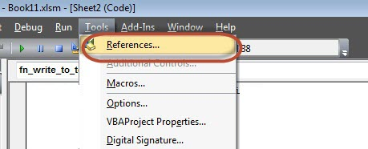Step 2 : Add "Microsoft Scripting RunTime" and Click OK.
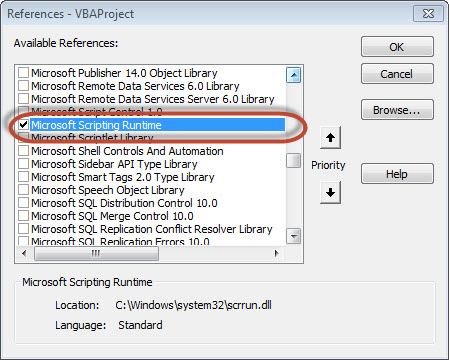Step 3 : Add Data that you would like to write it to a Text File and add a Command Button.
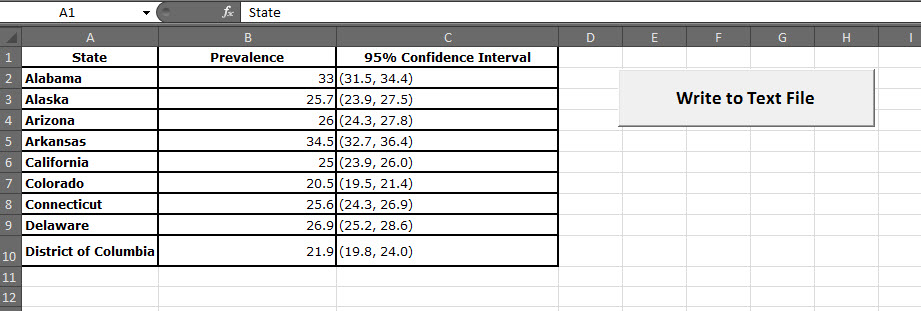Step 4 : Now it is time to Script.
Private Sub fn_write_to_text_Click()
Dim FilePath As String
Dim CellData As String
Dim LastCol As Long
Dim LastRow As Long
Dim fso As FileSystemObject
Set fso = New FileSystemObject
Dim stream As TextStream
LastCol = ActiveSheet.UsedRange.Columns.Count
LastRow = ActiveSheet.UsedRange.Rows.Count
' Create a TextStream.
Set stream = fso.OpenTextFile("D:\Try\Support.log", ForWriting, True)
CellData = ""
For i = 1 To LastRow
For j = 1 To LastCol
CellData = Trim(ActiveCell(i, j).Value)
stream.WriteLine "The Value at location (" & i & "," & j & ")" & CellData
Next j
Next i
stream.Close
MsgBox ("Job Done")
End Sub
Output
When executing the script, ensure that you place the cursor in the first cell of the worksheet. The Support.log file is created as shown below under "D:\Try".
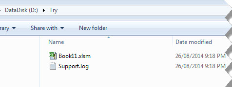The Contents of the file is also shown below :
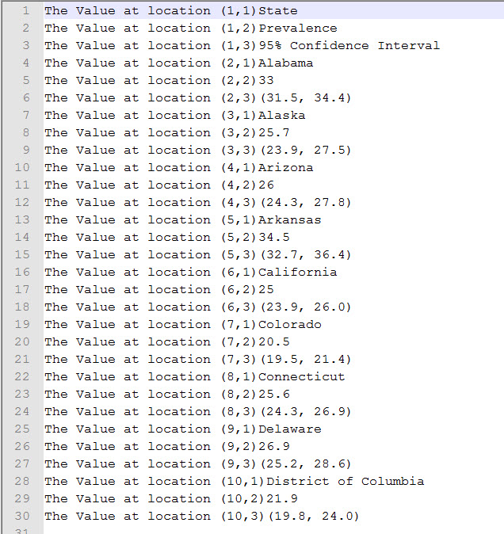Using Write Command
unlike FSO, we need NOT add any references, however we will NOT be able to work Drives, Files and Folders. We will be able to just add the stream to text file.
Example
Private Sub fn_write_to_text_Click()
Dim FilePath As String
Dim CellData As String
Dim LastCol As Long
Dim LastRow As Long
LastCol = ActiveSheet.UsedRange.Columns.Count
LastRow = ActiveSheet.UsedRange.Rows.Count
FilePath = "D:\Try\write.txt"
Open FilePath For Output As #2
CellData = ""
For i = 1 To LastRow
For j = 1 To LastCol
CellData = "The Value at location (" & i & "," & j & ")" & Trim(ActiveCell(i, j).Value)
Write #2, CellData
Next j
Next i
Close #2
MsgBox ("Job Done")
End Sub
Output
Upon executing the script, the "write.txt" file is created in the location "D:\Try" as shown below.
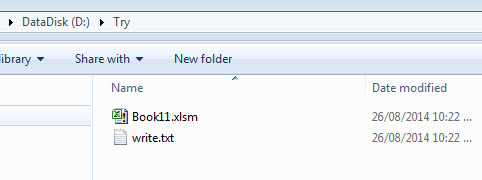The Contents of the file is also shown below :
VBA - Programming Charts
Using VBA, we will be able to do generate Charts based on certain criteria. Let us take a look at it with an example.
Step 1 : First Enter the data against which the graph has to be generated.
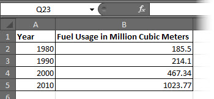Step 2 : Let us create 3 buttons one to generate Bar graph, pie Chart, Column Chart.
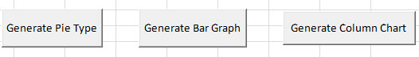Step 3 : Now let us develop a Macro to generate each one of these type of charts
' Procedure to Generate Pie Chart
Private Sub fn_generate_pie_graph_Click()
Dim cht As ChartObject
For Each cht In Worksheets(1).ChartObjects
cht.Chart.Type = xlPie
Next cht
End Sub
' Procedure to Generate Bar Graph
Private Sub fn_Generate_Bar_Graph_Click()
Dim cht As ChartObject
For Each cht In Worksheets(1).ChartObjects
cht.Chart.Type = xlBar
Next cht
End Sub
' Procedure to Generate Column Graph
Private Sub fn_generate_column_graph_Click()
Dim cht As ChartObject
For Each cht In Worksheets(1).ChartObjects
cht.Chart.Type = xlColumn
Next cht
End Sub
Step 4 : Upon clicking on the corresponding button, that chart is created. In the below output we have clicked on generate Pie Chart button.
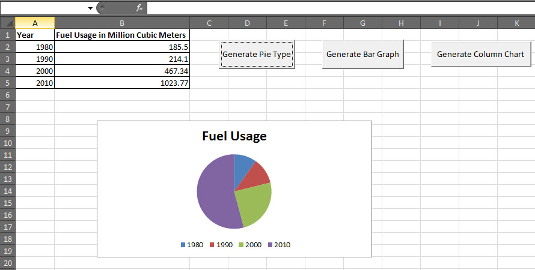VBA - User Forms
A UserForm is a custom-built dialog box that makes a user data entry more controllable for you and easier for the user. In this chapter, we will design a Simple form and add data into excel.
Step 1 : Navigate to VBA Window by pressing Alt+F11 and Navigate to "Insert" Menu and select "User Form". Upon selecting, user form is displayed below.
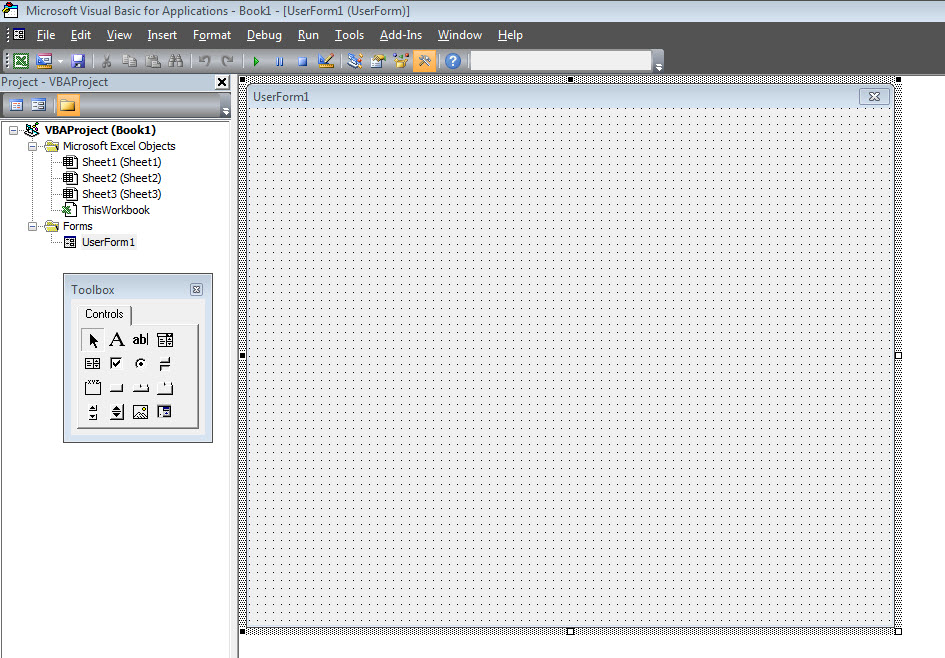Step 2 : Now let us design the forms using the given controls.
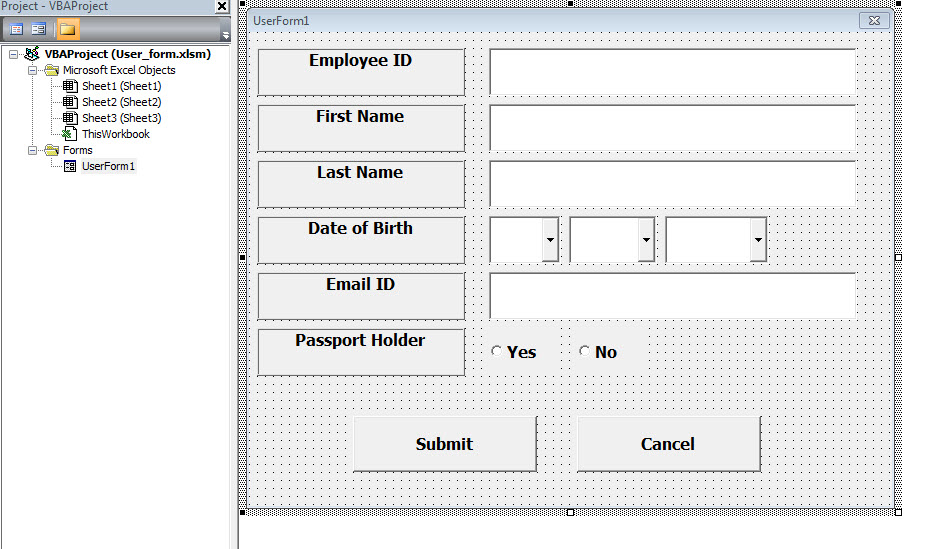Step 3 : After adding each controls, the controls has to be named. Caption corresponds to what appears on the form and name corresponds to the logical name which will be appearing while we write VBA code for that element.
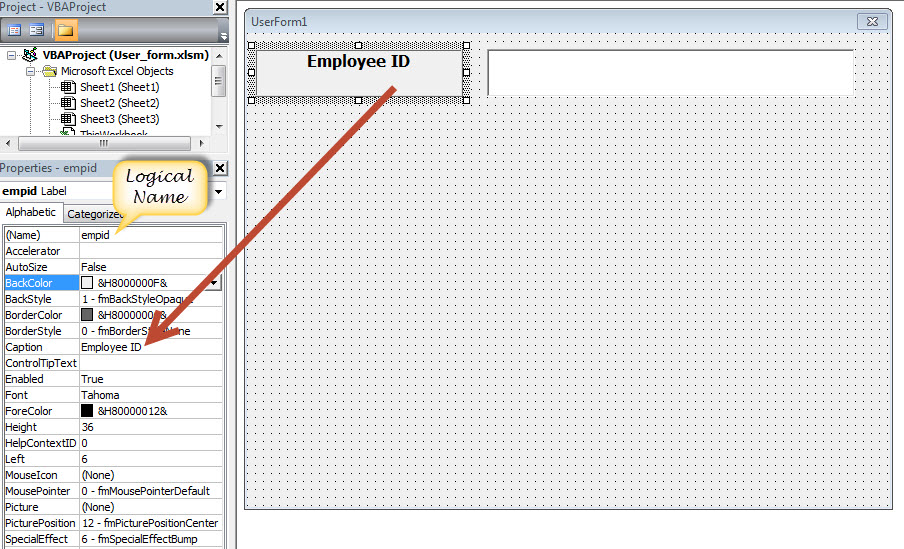Step 4 : Below are names against each one of the added controls.
| Control | Logical Name | Caption |
|---|---|---|
| From | frmempform | Employee Form |
| Employee ID Label Box | empid | Employee ID |
| firstname Label Box | firstname | First Name |
| lastname Label Box | lastname | Last Name |
| dob Label Box | dob | Date of Birth |
| mailid Label Box | mailid | Email ID |
| Passportholder Label Box | Passportholder | Passport Holder |
| Emp ID Text Box | txtempid | NOT Applicable |
| First Name Text Box | txtfirstname | NOT Applicable |
| Last Name Text Box | txtlastname | NOT Applicable |
| Email ID Text Box | txtemailid | NOT Applicable |
| Date Combo Box | cmbdate | NOT Applicable |
| Month Combo Box | cmbmonth | NOT Applicable |
| Year Combo Box | cmbyear | NOT Applicable |
| Yes Radio Button | radioyes | Yes |
| No Radio Button | radiono | No |
| Submit Button | btnsubmit | Submit |
| Cancel Button | btncancel | Cancel |
Step 5 : Now we will add code for the form load event by performing right click on the form and selecting 'View Code'.
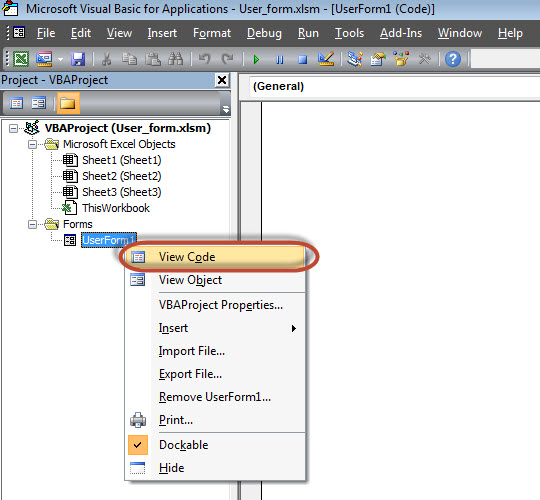Step 6 : Select userform from the objects drop down and select 'Initialize' method as shown below.
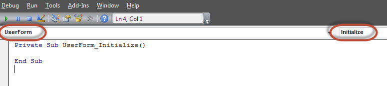Step 7 : Upon Loading the Form we should ensure that the text boxes are cleared, Drop down boxes are filled and Radio buttons are resetted
Private Sub UserForm_Initialize()
'Empty Emp ID Text box and Set the Cursor
txtempid.Value = ""
txtempid.SetFocus
'Empty all other text box fields
txtfirstname.Value = ""
txtlastname.Value = ""
txtemailid.Value = ""
'Clear All Date of Birth Related Fields
cmbdate.Clear
cmbmonth.Clear
cmbyear.Clear
'Fill Date Drop Down box - Takes 1 to 31
With cmbdate
.AddItem "1"
.AddItem "2"
.AddItem "3"
.AddItem "4"
.AddItem "5"
.AddItem "6"
.AddItem "7"
.AddItem "8"
.AddItem "9"
.AddItem "10"
.AddItem "11"
.AddItem "12"
.AddItem "13"
.AddItem "14"
.AddItem "15"
.AddItem "16"
.AddItem "17"
.AddItem "18"
.AddItem "19"
.AddItem "20"
.AddItem "21"
.AddItem "22"
.AddItem "23"
.AddItem "24"
.AddItem "25"
.AddItem "26"
.AddItem "27"
.AddItem "28"
.AddItem "29"
.AddItem "30"
.AddItem "31"
End With
'Fill Month Drop Down box - Takes Jan to Dec
With cmbmonth
.AddItem "JAN"
.AddItem "FEB"
.AddItem "MAR"
.AddItem "APR"
.AddItem "MAY"
.AddItem "JUN"
.AddItem "JUL"
.AddItem "AUG"
.AddItem "SEP"
.AddItem "OCT"
.AddItem "NOV"
.AddItem "DEC"
End With
'Fill Year Drop Down box - Takes 1980 to 2014
With cmbyear
.AddItem "1980"
.AddItem "1981"
.AddItem "1982"
.AddItem "1983"
.AddItem "1984"
.AddItem "1985"
.AddItem "1986"
.AddItem "1987"
.AddItem "1988"
.AddItem "1989"
.AddItem "1990"
.AddItem "1991"
.AddItem "1992"
.AddItem "1993"
.AddItem "1994"
.AddItem "1995"
.AddItem "1996"
.AddItem "1997"
.AddItem "1998"
.AddItem "1999"
.AddItem "2000"
.AddItem "2001"
.AddItem "2002"
.AddItem "2003"
.AddItem "2004"
.AddItem "2005"
.AddItem "2006"
.AddItem "2007"
.AddItem "2008"
.AddItem "2009"
.AddItem "2010"
.AddItem "2011"
.AddItem "2012"
.AddItem "2013"
.AddItem "2014"
End With
'Reset Radio Button. Set it to False when form loads.
radioyes.Value = False
radiono.Value = False
End Sub
Step 8 : Now we need to add code to the Submit button. Upon Clicking on submit button user Should be able to Add the values into the worksheet.
Private Sub btnsubmit_Click()
Dim emptyRow As Long
'Make Sheet1 active
Sheet1.Activate
'Determine emptyRow
emptyRow = WorksheetFunction.CountA(Range("A:A")) + 1
'Transfer information
Cells(emptyRow, 1).Value = txtempid.Value
Cells(emptyRow, 2).Value = txtfirstname.Value
Cells(emptyRow, 3).Value = txtlastname.Value
Cells(emptyRow, 4).Value = cmbdate.Value & "/" & cmbmonth.Value & "/" & cmbyear.Value
Cells(emptyRow, 5).Value = txtemailid.Value
If radioyes.Value = True Then
Cells(emptyRow, 6).Value = "Yes"
Else
Cells(emptyRow, 6).Value = "No"
End If
End Sub
Step 9 : Now add a method to close the form when user clicks on cancel button.
Private Sub btncancel_Click()
Unload Me
End Sub
Step 10 : Now Let us Execute the Form by clicking on "run" Button. Enter values into the form and click 'Submit' button. Automatically the values would flow into the worksheet as shown below.